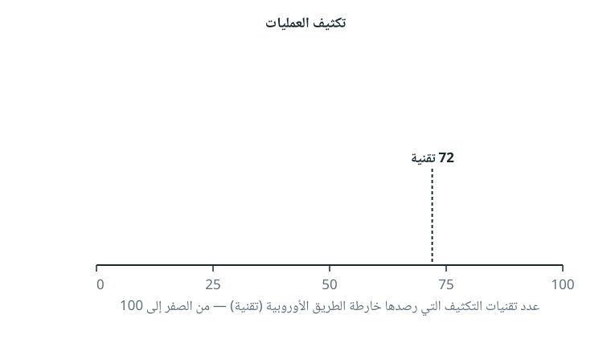

تكثيف العمليات
Process Intensification
تكثيف العمليات منهج هندسي يستبدل بالمعدات والأساليب التقليدية بدائل أصغر وأكفأ، فيقلّ حجم المعدات لكل وحدة إنتاج، وينخفض استهلاك الطاقة والنفايات، مع الحفاظ على الهدف الإنتاجي نفسه أو تحسينه.
تكثيف العمليات منهج في الهندسة الكيميائية يعرّفه Stankiewicz وMoulijn بأنه تطوير أجهزة وتقنيات جديدة، مقارنةً بالمستخدم شائعاً، يُتوقع أن تُحدث تحسينات جوهرية في التصنيع والمعالجة: خفض كبير في نسبة حجم المعدات إلى الطاقة الإنتاجية، أو في استهلاك الطاقة، أو في إنتاج النفايات، بما يؤدي في النهاية إلى تقنيات أرخص وأكثر استدامة. ويقسم المصدر المجال إلى فرعين: معدات مكثِّفة مثل المفاعلات الجديدة وأجهزة الخلط ونقل الحرارة والكتلة المكثفة، وأساليب مكثِّفة مثل الفصل الهجين ودمج التفاعل مع الفصل أو انتقال الحرارة في ما يسمى المفاعلات متعددة الوظائف. ويشترط المصدر شرطاً حاسماً: التكثيف يخص الأساليب والمعدات الهندسية وحدها؛ فتطوير مسار كيميائي جديد أو تغيير تركيب حفّاز لا يُعدّ تكثيفاً مهما بلغ تحسنه، لأن التغيير ليس في الهندسة. ويذكر المصدر أن Ramshaw عرّف التكثيف في مؤتمر 1995 بأنه استراتيجية لخفض حجم المصنع خفضاً جوهرياً للوصول إلى هدف إنتاجي معيّن، وأن الخفض قد يأتي من تصغير المعدات الفردية أو من تقليل عدد وحدات التشغيل. والفرق بين التعريفين جوهري: تعريف Ramshaw يصف أثراً واحداً هو الحجم، وتعريف Stankiewicz وMoulijn يعدّد آثاراً مرغوبة عدة، منها الطاقة والنفايات، فلا يُشترط في المنهج أن يكون مخرجه تصغيراً فقط.
كيف تعمل الظاهرة؟
آلية التكثيف تعمل على ثلاثة مسارات متوازية يذكرها المصدر: تصغير المعدة الفردية، وتقليل عدد وحدات التشغيل، ودمج وظيفتين في وحدة واحدة. فالمفاعل متعدد الوظائف يدمج التفاعل مع الفصل أو مع انتقال الحرارة، فيُلغى وعاء منفصل كامل. والمعدة ذات المسارات الدقيقة ترفع مساحة التلامس لكل وحدة حجم، فيقلّ الحجم اللازم لبلوغ التحويل نفسه. والأسلوب الهجين في الفصل يستبدل سلسلة أعمدة بعملية واحدة. والنتيجة المشتركة أن كتلة المعدن وحجم السائل المحتجز تنخفضان، فينخفض معهما الزمن اللازم للتشغيل والطاقة المستهلكة في التسخين والضخ.
العلاقة بالأرقام
المقياس الحاكم في المصطلح هو نسبة حجم المعدات إلى الطاقة الإنتاجية، لا الحجم المطلق. ويذكر المصدر أن Ramshaw تحدّث عن خفض في الحجم من رتبة 100 أو أكثر، واصفاً ذلك بأنه رقم صعب، بينما يرى Stankiewicz وMoulijn أن الخفض بمعامل اثنين يحمل بالفعل سمات تغيير جوهري ويُعدّ تكثيفاً. ويرد في المصدر نفسه أن معاملات نقل الحرارة في مبادلات الحرارة ذات القنوات الدقيقة تتراوح بين 10000 و35000 واط لكل متر مربع لكل كلفن. وهذه أرقام منشورة في المصدر، لا قياس أُجري هنا.
مفاهيم متقاربة
التمييز العملي الأهم أن التكثيف يخص الهندسة لا الكيمياء. فالمصدر يقرّر أن تطوير مسار كيميائي جديد، أو تغيير تركيب حفّاز، لا يُعدّ تكثيفاً مهما جلبت من تحسينات، لأن التغيير ليس في الجهاز أو الأسلوب. ويترتب على ذلك أن مشروعاً قد يحقق وفورات كبيرة في الطاقة دون أن يكون تكثيفاً، والعكس. والتمييز الثاني أن التكثيف ليس مرادفاً للتصغير: تصغير المعدة أثر مرغوب، لكن المنهج يعدّ أيضاً خفض النفايات والطاقة أهدافاً مستقلة، فقد يكثَّف مصنع دون أن يصغر حجم معداته.
حدود التطبيق
حدود المصطلح تظهر في ثلاثة مواضع. أولاً، التعريفان لا يتفقان على عتبة الخفض: Ramshaw يشترط رتبة 100، وStankiewicz وMoulijn يقبلان معامل اثنين، فالحكم على مشروع بأنه تكثيف يبقى رهناً بالتعريف المستخدم. ثانياً، المصدر نفسه يذكر أن المعدات المكثِّفة طُبّقت على نطاق محدود ولم تصبح معياراً معترفاً به في مجتمع الهندسة الكيميائية، فوجود التقنية لا يعني انتشارها. ثالثاً، خارطة الطريق الأوروبية تنبّه إلى أن تقييم المنافع اقتصر على حدود خطوة العملية التي تُطبَّق فيها، وأن التقييم قد يختلف في تطبيقات متخصصة.

| الكمية | القيمة | المصدر |
|---|---|---|
| عدد تقنيات التكثيف التي رصدها خارطة الطريق الأوروبية | 72 تقنية | [2] |
| عدد براءات الاختراع التي حُصرت في المسح نفسه | 1000 براءة اختراع (نحو) | [2] |
| عدد الخبراء الذين استُشيروا في المسح | 70 خبيراً | [2] |
| خفض حجم المفاعل عند استبدال نظام تقليدي بوحدة مونوليث داخلية | 100 ضعف (نحو) | [1] |
المصادر
- 1 Process Intensification: Transforming Chemical Engineering — American Institute of Chemical Engineers (2000). www.aiche.org/sites/default/files/docs/news/010022_cep_stankiewicz.pdf · اطُّلع عليه 2026-11-28
- 2 European Roadmap for Process Intensification - Appendix 1: PI Technologies Description and Review — European Federation of Chemical Engineering (2008). efce.info/efce_media/Downloads/wppi/Appendix+1+_+Process+Intensification+Technologies+Description+and+Review_tcm24_258504-p-868.pdf · اطُّلع عليه 2026-11-28
استشهد بهذا المصطلح
الصيغتان مبنيتان من بيانات الصفحة نفسها: العنوان والتاريخ ورابط النسخة المنشورة.
تكثيف العمليات — Process Intensification. (2026). ديوان المعرفة — انفراد. https://infiradev.com/diwan/terms/term-process-intensification.html
@misc{term-process-intensification2026,
title = {تكثيف العمليات},
titleaddon = {Process Intensification},
howpublished = {{ديوان المعرفة — انفراد} — مرجع علمي عربي},
year = {2026},
url = {https://infiradev.com/diwan/terms/term-process-intensification.html},
urldate = {2026-11-28},
note = {مراجعة علمية: Abdullah Al-Huwaidi}
}
راجعه: Abdullah Al-Huwaidi · 2026-11-28 · آخر تحديث 2026-11-28